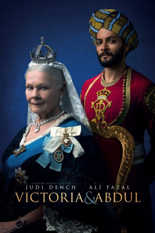
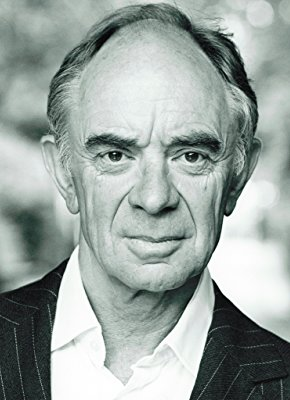
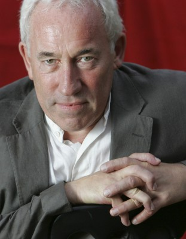
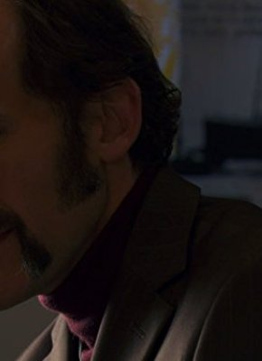
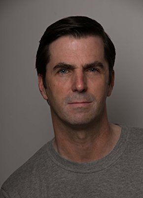

#8047 Victoria & Abdul
Auszeichnungen: für 2 Oscars nominiert
 gesehen am 23.01.2018
gesehen am 23.01.2018
 
 IMDB-Wertung: 6.8 / 10
IMDB-Wertung: 6.8 / 10  Tomatometer: 65
Tomatometer: 65  Metascore: 58
Metascore: 58 
Im Jahr 1887 feiert die britische Königin Victoria (Judi Dench) mit einem prachtvollen Fest ihr 50. Thronjubiläum. Während der Feierlichkeiten lernt die Monarchin den jungen indischen Bediensteten Abdul Karim (Ali Fazal) kennen, der extra anlässlich des Jubiläums nach Großbritannien gereist ist. Nur kurze Zeit später nimmt die exzentische Königin den jungen Inder in ihr Gefolge auf, was ihre Familie und ihre Berater ebenso verblüfft wie vor den Kopf stößt. Doch bald schon entwickelt sich zwischen dem Diener und der Monarchin durch lange und inspirierende Gespräche eine tiefe Freundschaft, durch die Victoria, die unter anderem auch den Titel Kaiserin von Indien trägt, viel über die ihr fremde Kultur von Abduls Heimat lernt. Die außergewöhnliche Beziehung der beiden erzeugt jedoch auch schnell Missgunst und Neid unter den übrigen Menschen am Hofe...
Jahr: 2017
Dauer: 111 Minuten
FSK: 6
Land: England Studio: UPITonspuren: DTS - ,
Untertitel: Deutsch, Englisch,
Auflösung: 1080p (1920x800) Größe: 6952 MB
Genre: Drama, Geschichte, Biographie
Regisseur:  Stephen Frears
Stephen Frears
Drehbuch: Lee Hall
Soundtrack: Thomas Newman
Darsteller:
 Judi Dench als Queen Victoria
Judi Dench als Queen Victoria- Ali Fazal als Abdul Karim
 Tim Pigott-Smith als Sir Henry Ponsonby
Tim Pigott-Smith als Sir Henry Ponsonby Eddie Izzard als Bertie, Prince of Wales
Eddie Izzard als Bertie, Prince of Wales Adeel Akhtar als Mohammed
Adeel Akhtar als Mohammed Michael Gambon als Lord Salisbury
Michael Gambon als Lord Salisbury- Paul Higgins als Dr. Reid
 Olivia Williams als Lady Churchill
Olivia Williams als Lady Churchill Fenella Woolgar als Miss Phipps
Fenella Woolgar als Miss Phipps Julian Wadham als Alick Yorke
Julian Wadham als Alick Yorke-  Robin Soans als Arthur Bigge
 Ruth McCabe als Mrs. Tuck
Ruth McCabe als Mrs. Tuck-  Simon Callow als Puccini
- Kemaal Deen-Ellis als Ahmed
-  Simon Paisley Day als Mr. Tyler
- John Stahl als Ghillie
 Jonathan Harden als Kaiser
Jonathan Harden als Kaiser- John Rowe als Head Waiter
- Benjamin Haigh als Little Page Boy
- Deano Bugatti als Queen Victoria's Waiter (uncredited)
- Rita McDonald Damper als Ham House Guest (uncredited)
- Robert McLanachan als Balmoral guest (uncredited)
- Christopher McMullen als Footman (uncredited)
-  Stuart Whelan als Chef (uncredited)
- Sukh Ojla als Mrs. Karim
- Amani Zardoe als Princess Helena
- Sophie Trott als Queen of Greece
- Penny Ryder als Grand Duchess Sophie
- Trevor Fox als Head Chef
- Joe Caffrey als Sous Chef
- Tim McMullan als Tailor
- Sandy Grierson als Balmoral Waiter
- Alaistair Pether als Dancing Ghillie
- Sally Jokhan als Mrs. Karim's Mother
- Charlie Stewart als Fiddle Player
- Willie Cochrane als Piper
- Jonathan Mayer als Indian Musician 1
- Mitel Purohit als Indian Musician 2
- Sam Kenyon als Puccini Pianist
- Samuel Stefan als Henchman
- Richard Banks als Beggar (uncredited)
- Nigel Black als Private Secretary (uncredited)
- Tim Bristow als Deputy Parliamentary Secretary (uncredited)
- John Byrne als House staff (uncredited)
- Will Christopherson als Young Porter Boy (uncredited)
- David Cromarty als Beggar (uncredited)
- Grant Crookes als Footman (uncredited)
- Andrei Csolsim als Footman (uncredited)
- Marek Hollands als Footman (uncredited)
 Ashley Hudson als Footman (uncredited)
Ashley Hudson als Footman (uncredited)
Datei: X:\2017(N-Z)\Victoria & Abdul (2017, FSK6, 1920x800).mkv seit 19.01.2018
Festplatte: HD 2017(A-Z)-2018(A-F)
 Es gibt insgesamt 170 Filme in der Gruppe '2017(N-Z)'
Es gibt insgesamt 170 Filme in der Gruppe '2017(N-Z)'